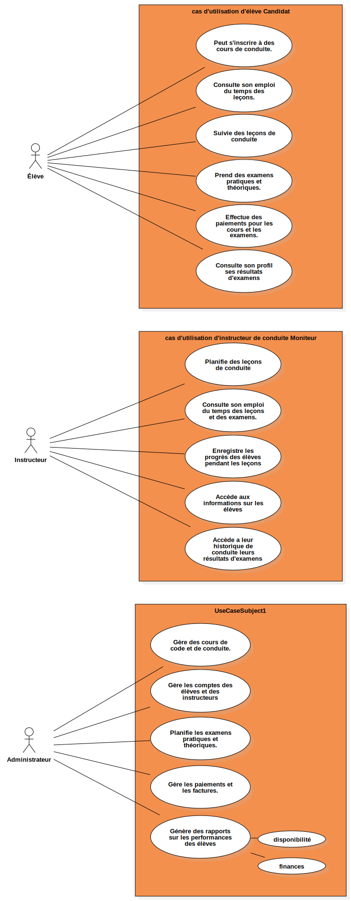

useCase
UMLModel
Untitled
::
useCase
Description
none
Diagrams

useCase_autoEcole
Properties
Name
Value
name
useCase
stereotype
null
visibility
public
importedElements
viewpoint
Owned Elements
useCase_autoEcole
Instructeur
Administrateur
Secrétaire
cas d'utilisation d'élève Candidat
Élève
cas d'utilisation d'instructeur de conduite Moniteur
UseCaseSubject1
Gère les comptes des élèves et des instructeurs
Gère des cours de code et de conduite.
Planifie les examens pratiques et théoriques.
Génère des rapports sur les performances des élèves
disponibilité
finances
Gère les paiements et les factures.
Génère des rapports sur les performances des élèves
UseCase1